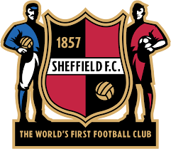
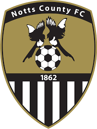
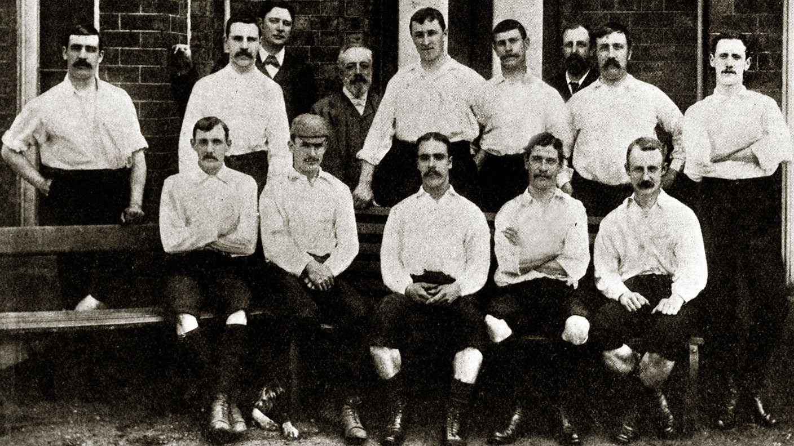
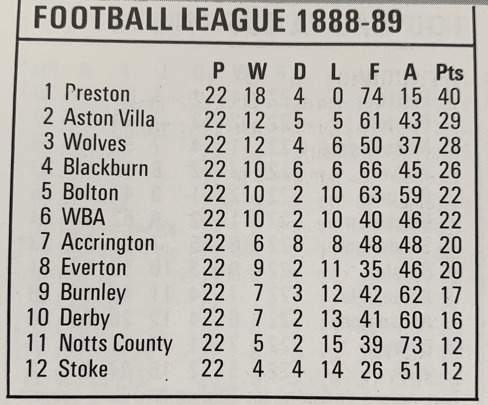
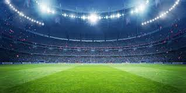
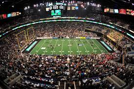

Here you can read some information about football history
When and where it started
No one knows the full information about where and who invented this game.
There are some variations of where football was started.
The most popular theories are Chinese, English, and Italian.
Below you can read about these theories:
First clubs
Football clubs have existed since the 15th century, but unorganized and without official status, so it's hard to decide which the first football club was.
But there're some clubs that must be known.
Foot-Ball Club formed 1824 in Edinburgh The first football club, formed by former school students, was established in Sheffield in 1855. The oldest among professional football clubs is the English club Notts County that was formed in 1862 and still exists today.


The first competitions
Football's story is a fascinating journey through time. It began with the formation of the first football associations and the inaugural international matches, leading to the establishment of FIFA.
As the game spread beyond Britain, national leagues were formed, starting with the English Football League in 1888.
Football's journey culminated in its recognition as an official Olympic sport in 1908, with women's football eventually joining the Olympic program in 1996.


Globalization of the biggest sport in the world
In the late 19th century, football was primarily played between national teams like England and Scotland. Today, FIFA oversees 211 national associations, highlighting football's global reach.
The sport's allure lies in its blend of individual talent and collective effort, offering a stage for both triumph and unpredictability.


The name of the game: football or soccer?
If you want to say soccer. First of all you are stfu
And watch this to know that only football right
If u still disagree with me, write me in Instagram/telegram\tiktok